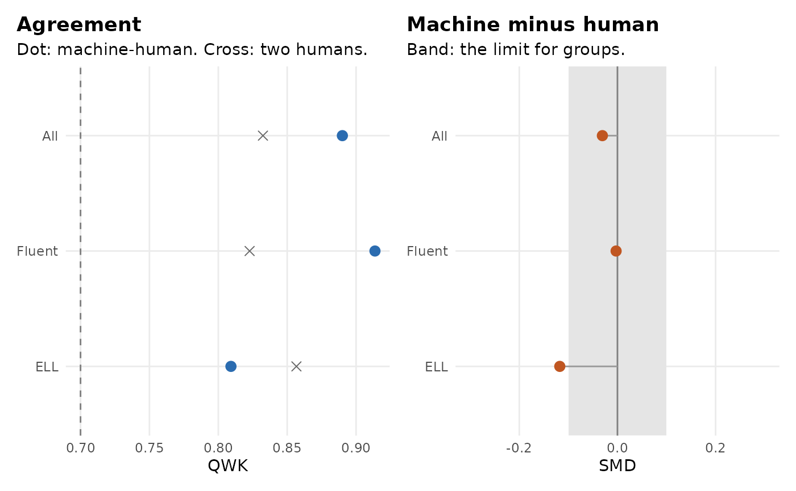

Summarizes how well machine scores agree with human scores, overall and within groups of test takers, with the statistics used to evaluate automated scoring (Williamson, Xi and Breyer, 2012):
Arguments
- machine
machine scores, or a pipeline that has been through
score_open()(itsopen_scoresare used, by item and group).- human1
the first human score for each response.
- human2
the second human score,
NAfor responses read once.- group
optional group of each test taker, such as language status.
- by
optional item or prompt of each response, for one report per item.
- rules
thresholds from
mv_rules().- object
an agreement report.
- ...
not used.
Value
A tibble of class mv_agreement with one row per item (if by)
and group ("All" first): n, n_double, mean_human,
mean_machine, exact, adjacent, qwk, qwk_human, corr, smd,
prmse and verdict. Plot it with autoplot().
Details
exact,adjacent: The share of responses where the machine score equals the first human score, or is within one point of it.qwk: Quadratic weighted kappa between machine and first human score, andqwk_humanbetween the two human scores (double-scored responses).corr: The correlation between machine and first human score.smd: The standardized mean difference, machine minus human, divided by the pooled standard deviation. Positive values mean the machine is more generous than people.prmse: The proportional reduction in mean squared error (Haberman, 2008; Loukina et al., 2020): How much of the variance of the true score the machine score explains, after allowing for the disagreement between human raters. It needs double-scored responses.
A row's verdict applies the thresholds of mv_rules() (the same ones
as the agreement gate of score_open()): qwk at least qwk_min and no
more than qwk_drop below qwk_human; |smd| at most score_smd
overall and at most subgroup_smd within a group.
References
Haberman, S. J. (2008). When can subscores have value? Journal of Educational and Behavioral Statistics, 33(2), 204-229.
Loukina, A., Madnani, N., Cahill, A., Yao, L., Johnson, M. S., Riordan, B., & McCaffrey, D. F. (2020). Using PRMSE to evaluate automated scoring systems in the presence of label noise. In Proceedings of the Fifteenth Workshop on Innovative Use of NLP for Building Educational Applications (pp. 18-29).
Williamson, D. M., Xi, X., & Breyer, F. J. (2012). A framework for evaluation and use of automated scoring. Educational Measurement: Issues and Practice, 31(1), 2-13.
Examples
e1 <- essays[essays$prompt == "E1", ]
s <- train_scorer(e1)
# judge the scorer on its cross-validated predictions
a <- agreement_report(s$cv$machine, e1$human1, e1$human2, group = e1$group)
a
#> Machine-human agreement
#> group n n_double mean_human mean_machine exact adjacent qwk qwk_human corr
#> All 400 160 1.97 1.93 0.71 0.99 0.89 0.83 0.89
#> Fluent 300 119 2.04 2.03 0.75 1.00 0.91 0.82 0.91
#> ELL 100 41 1.77 1.63 0.58 0.96 0.81 0.86 0.84
#> smd prmse verdict
#> -0.03 0.96 meets
#> -0.00 1.00 meets
#> -0.12 0.85 machine too low
#> Meets: QWK >= 0.7 and within 0.1 of human-human QWK; |SMD| <= 0.15 overall and <= 0.1 within groups (mv_rules()).
autoplot(a)
